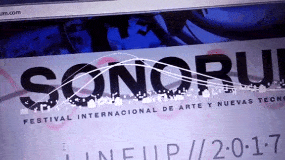
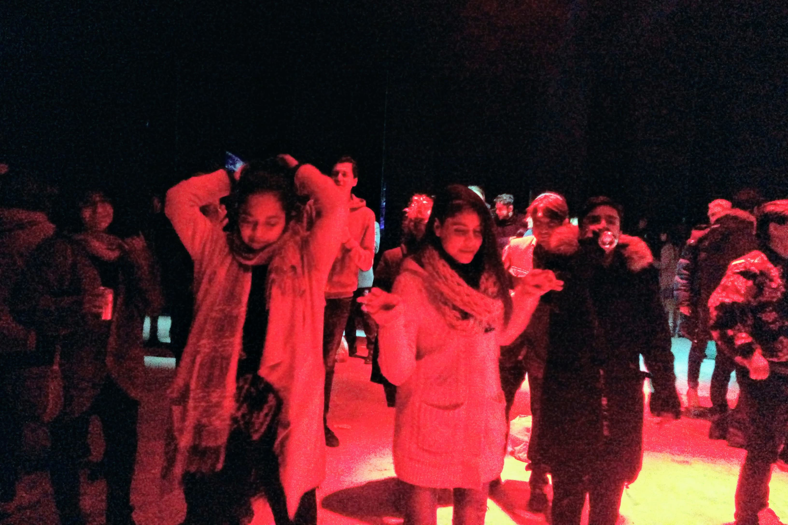
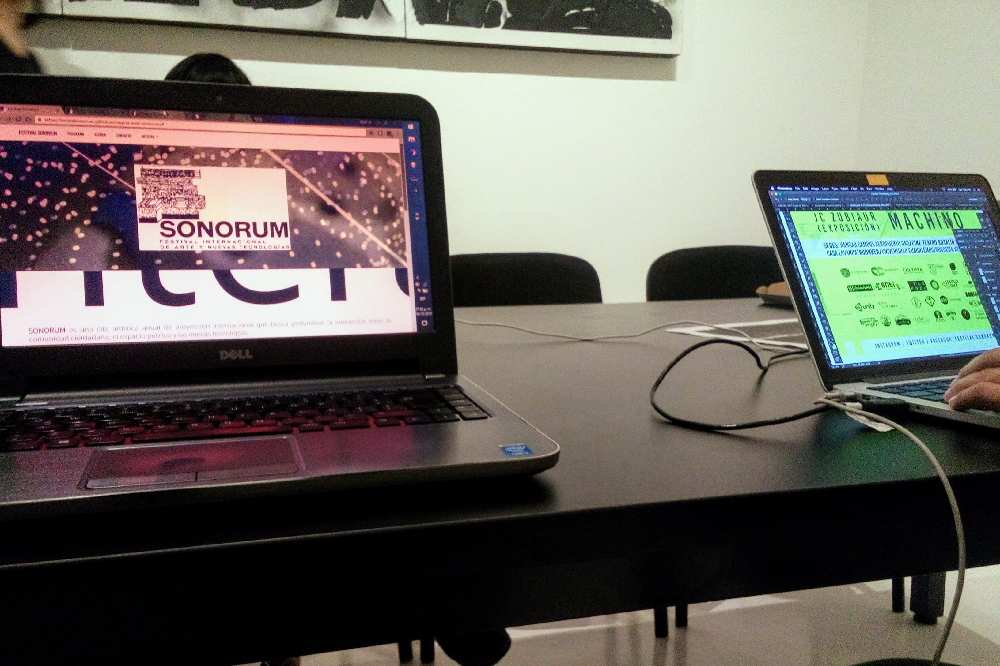

Web F. Sonorum (Qro.)
(2016/17)

Festival Sonorum . com
Festival Sonorum es un festival dedicado a la exploración de nuevo medios (tecnológicos) para la creación artística. Participé desarrollando su sitio web para las ediciones del 2016 y 2017.
Festival Sonorum es una propuesta que busca conjugar diferentes medios artisticos/tecnológicos en un sólo sitio, entre los que han destacado Takami Nakamoto, /* pac interactive*, Esstro9, entre otros importantes exponentes del arte digital a nivel mundial.
Estos eventos buscan atraer a la gente al lado bueno de la fusión entre arte y tecnología.
 